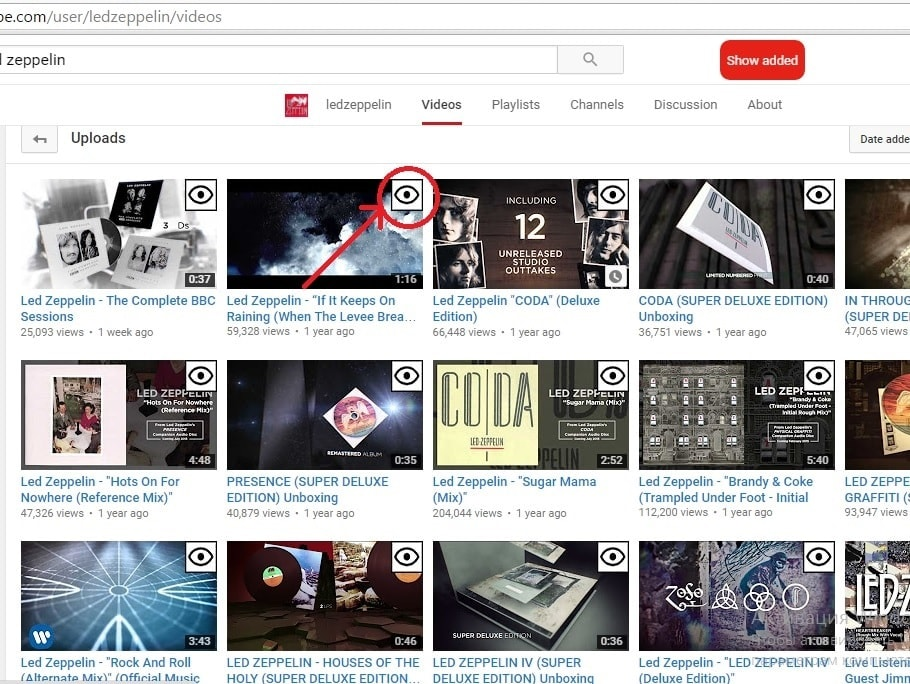
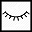
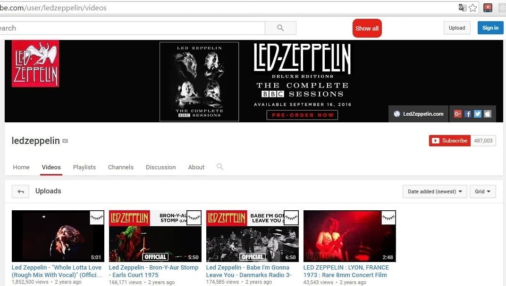

Let`s check how it works on Led Zeppelin channel as an example
Let`s go to their "videos" page
We see on each video "eye" button appeared. Click it, and the video will be added
to your personal playlist!
Added item will be marked with "closed eye" button
You can easily delete video/playlist from your personal playlist by clicking "closed eye" button
The same action you can do on "playlists" page.
To see videos/playlists that you have added click big red "Show added" button
When you click it, other videos/playlist will hide away
When you click "Show all" button, you will see both added and not added playlists/videos
What can I do if "eye" buttons did not appear?
Just reload the page and everything will be ok :)
Where are all my lists stored?
All lists are stored locally on your computer in "localStorage"
If you use CCleaner or similar programs:
when you run 'Analyze' - go to Chrome Internet Cache and Cookies and add to Exclude list all the items
which have string "Local Storage"
If you clear the whole Cache all list created by you will be deleted
A lot of useful sites and extensions use localStorage to store your data, so delete only suspicious items